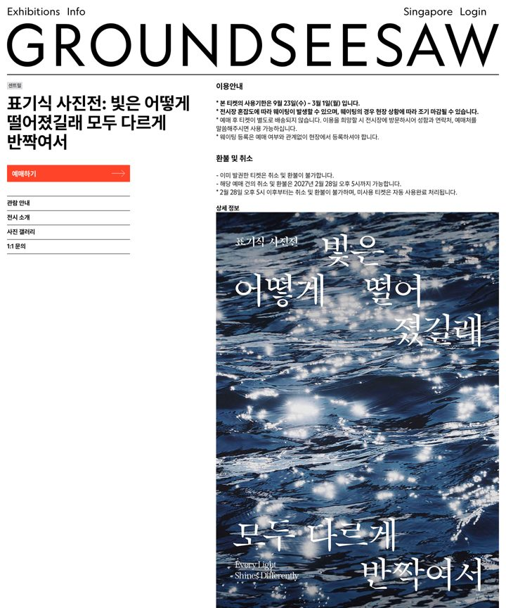
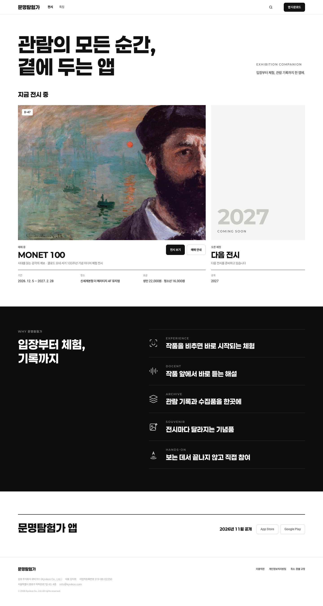
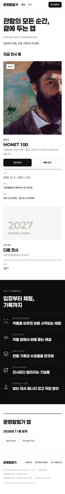
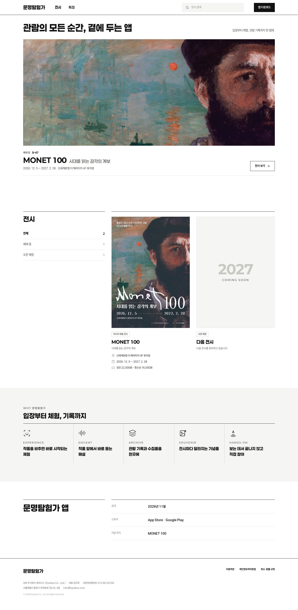
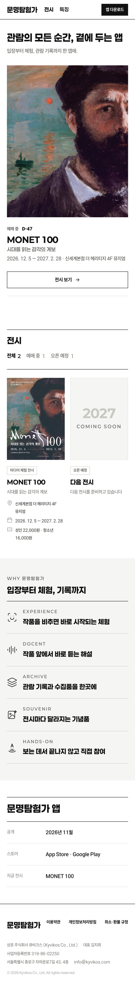
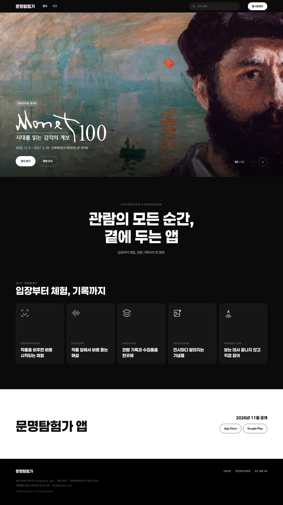
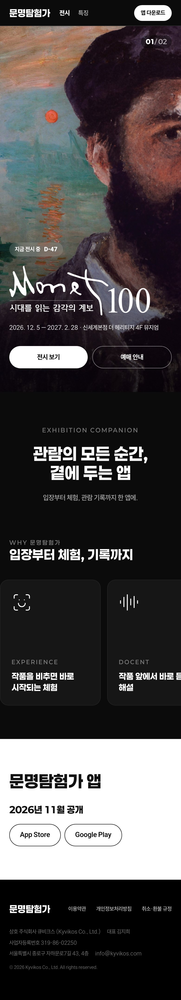

문명탐험가 홈 · MONET 100 전시 상세 시안 3개
전시 도메인 레퍼런스 12곳을 먼저 수집하고, 그 문법으로 홈과 전시 상세를 각각 실제 HTML로 만들었습니다. 아래 화면은 1440·390에서 헤드리스로 찍은 전체 길이 캡처이고, 각 시안의 실제 페이지도 열어볼 수 있습니다. 시안마다 GNB·푸터는 하나의 공통 컴포넌트(kit.js)로 두 페이지가 같은 것을 씁니다. 전시 히어로는 승인된 키비주얼 A를 그대로 씁니다.
- Paperlogy + Freesentation
- 흑백 플랫폼 + 전시 포인트 #D9672F
- 기존 페이지·앱 문구만 사용
- 이모지·밑줄 링크·한글 자간 없음
- GNB 단일 컴포넌트
지금 페이지
2026-10-19 라이브 캡처
레퍼런스 12
전시·미술관·컬처 티켓·컬처 앱 · 헤드리스 캡처, 쿠키 배너는 거부


A
지면
작품 이미지가 지면을 차지하고, 정보는 고정 칼럼 하나에 모은다.
레퍼런스: 그라운드시소 전시 상세 · Tate · 오랑주리
- 홈: 큰 선언 헤드라인 → 진행 중 전시(넓게) + 다음 전시 같은 템플릿 → 풀블리드 블랙 밴드 특징 5행 → 앱 공개
- 전시: 승인 히어로 → 왼쪽 고정 칼럼(상태·D-day·사실 4줄·예매·목차) + 오른쪽 소개·공간·관람 정보·티켓
- 공간은 체험 구성안 렌더 3장(살롱 · 변화의 복도 · 모네 전시관)
- 모바일: 고정 칼럼이 위로 오고, 화면 아래 예매 바

1440 · 전체 길이

390 · 전체 길이

B
인덱스
미술관 홈페이지처럼 대표 전시 배너, 목록, 정보 표. 전시가 늘어나도 같은 틀로 쌓인다.
레퍼런스: 국립현대미술관 홈·상세 · 서울시립미술관 · Tate · 오랑주리
- 홈: 한 줄 선언 → 대표 전시 와이드 배너 + 제목 줄 → 상태 필터(전체·예매 중·오픈 예정) + 포스터 카드 → 특징 5칸 인덱스 → 앱 정보 표
- 전시: 승인 히어로 → 제목 줄 → 고정 탭(소개·공간·정보·티켓) + 예매 버튼 → 본문 + 오른쪽 고정 정보 카드
- 공간은 6개 존 전부 목록으로(썸네일 + 위치 + 한 줄)
- GNB에 검색 필드를 상시 노출, 각진 버튼

1440 · 전체 길이

390 · 전체 길이

C
몰입
미디어 체험 전시의 검은 지면. 이미지가 빛나고, 예매는 늘 화면 아래에 있다.
레퍼런스: 아르떼뮤지엄 · teamLab · Fever · NOL 티켓
- 홈: 전시 슬라이드 풀스크린(키비주얼 + 공식 락업) → 중앙 선언 → 특징 타일 5개 → 흰 밴드 앱 공개
- 전시: 승인 히어로 → 소개 + 자화상 → 6개 존 이미지 그리드 → 생라자르 역 풀블리드 → 큰 숫자 사실 4칸 → 티켓
- 데스크톱·모바일 모두 하단 고정 예매 바(가격 + 예매하기)
- 버튼은 알약형, GNB는 검정 반투명

1440 · 전체 길이

390 · 전체 길이

확인할 것
- 공간 이미지 세 시안의 공간 섹션은 내부용 체험 구성안(/experience, noindex)의 3D 공간 시각화와 설명 문장을 씁니다. 공개 페이지에 써도 되는지 확인이 필요합니다.
- 히어로 서체 승인된 히어로 A의 기간 숫자는 포스터 재현을 위해 Song Myung을 그대로 둡니다. 서체 규칙(Paperlogy·Freesentation만)과 충돌하므로 유지할지 정해야 합니다.
- 예매 링크 NOL 상품 주소가 없어 예매 버튼은 페이지 안 '티켓과 앱'으로 연결했습니다. 판매 페이지 주소가 나오면 교체합니다.
- 앱 문구 '미션'은 기존 페이지 문구 그대로입니다. '다섯 조각 수집', '관람 등급이 오릅니다'는 게임 어투라 '해설과 수집품이 열립니다'(스토어 설명문)로 바꿨습니다.